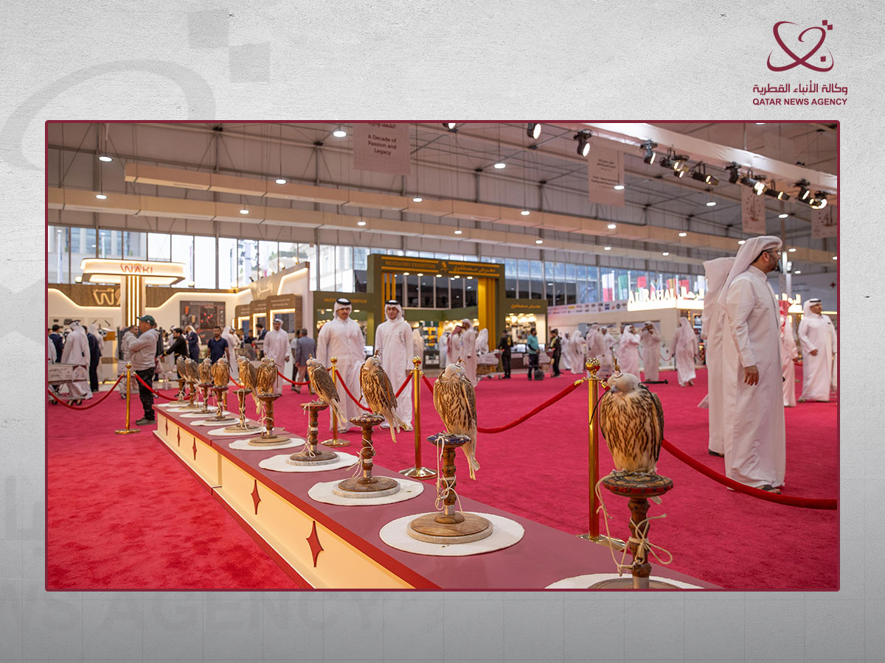

Doha — Sayd
See the Suhail 2026 photo album: falcons, visitors, and faces of the fair →
The Katara International Hunting and Falcons Exhibition “Suhail 2026” concluded its tenth edition in Doha after five days that saw attendance exceeding 80,000 visitors and broad participation by specialized companies and entities, completing the exhibition’s first decade as it has become one of the region’s foremost appointments for hunting, falconry, maqnas (desert hunting trips), and overland travel enthusiasts.
This year’s edition ran from 8 to 12 September under the slogan “A Decade of Passion and Heritage.” At its opening, the exhibitor list comprised 158 entities and companies from 15 countries, spanning fields from falcons and their equipment and hunting gear to camping, vehicle outfitting, modern technologies, and logistics services.
Suhail’s identity is no longer limited to being a fair for selling hunting supplies. The tenth edition showcased more than 20 innovations and inventions related to hunting, shooting, and travel—an indicator of a specialized market in which modern technologies intersect with heritage practices.
Falcons at the heart of the event
The Suhail falcons auction remained one of the fair’s biggest draws for the public and falconers, with a selection of distinctive and rare falcons on offer and competition to acquire them. Mohammed bin Abdulatif Al-Misnad, vice-chair of the organizing supreme committee, described the auction as one of Suhail’s most prominent activities, and noted that this year’s edition coincided with the start of a new season for falconry and maqnas.

Source: QNA
The exhibition halls presented a broad picture of contemporary hunting: falcons and training and care equipment; gear for trips and outdoor camps (kashtat); vehicle fittings; products for hunters and falconers; and traditional crafts and arts inspired by the desert and hunting.
At the same time, the environmental dimension appeared in a number of participations and experiences, including sustainable hunting, alongside entities such as the Department of Antiquities at Qatar Museums, which used the presence of desert-goers to raise awareness about protecting archaeological sites while practicing outdoor hobbies.
From hobby to a specialized market
Suhail’s figures point to the expansion of the economy surrounding hunting and falconry in the region. Exhibition director Abdulaziz Al-Bu Hashem Al-Sayed spoke of strong purchasing activity in the halls, considering that the goal is no longer merely to hold a commercial fair, but to consolidate a specialized gathering that brings together hobbyists, companies, and interested parties from different countries.

Source: QNA
This expansion is also visible in the nature of the participants themselves. Alongside specialized companies, institutions offering shipping and storage services took part—including Qatar Post—while the fair included vehicle-outfitting and camping sectors and services linked to falcons and hunting. The edition also enjoyed support from the “Daem” fund for the ninth consecutive year.
At the close of the exhibition, DTS won the Best Stand award, while the Best Garage award went to “Al-Muharrik Al-Sahrawi” (The Desert Engine), alongside specialized competitions in making falcon hoods (baraqi‘) and other elements tied to falconry culture.
Media as a partner in Suhail
At the close of the edition, Malaka Mohammed Al-Shreem, member and secretary of the organizing supreme committee, stressed the importance of local, Arab, and international media in conveying the image of the exhibition, and considered the media a strategic partner in strengthening Suhail’s presence and introducing Qatari heritage worldwide.
After ten editions, the road appears open to a new stage for the fair. The supreme committee has already begun thinking about the next edition, with a drive to keep developing the event and consolidating its place as an international gathering for falconers, hunting and maqnas enthusiasts, and specialized companies.
Thus Suhail 2026 closes its first decade—but the figures and the breadth seen this year suggest that the first ten years may be only the beginning.
Source: Qatar News Agency (QNA).